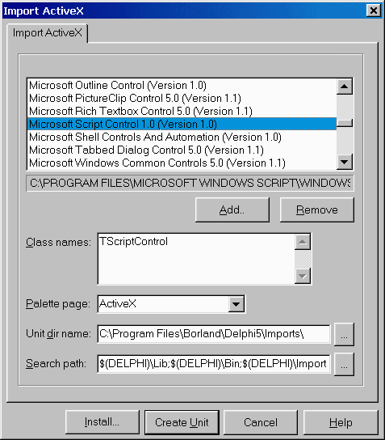

Использование Microsoft ScriptControl
Использование Microsoft ScriptControl
Анатолий Тенцер
Содержание
Введение
Добавление TScriptControl в программу
Импорт ActiveX-сервера
Настройка свойств и вызов скриптов
Интеграция TScriptControl с VCL
Модель расширения TScriptControl
Интерфейс IDispatch
function GetIdsOfNames
function Invoke
Информация RTTI Delphi
Сводим воедино
Пишем GetIdsOfNames
Пишем Invoke
Оператор For Each
Интерфейс IEnumVariant
Класс TVCLEnumerator
Компонент TVCLScriptControl
Заключение
Введение
При разработке настраиваемых информационных систем часто возникает необходимость добавить в свою программу встроенный язык программирования. Такой язык позволял бы конечным пользователям настраивать поведение программы без участия автора и перекомпиляции. Однако самостоятельная реализация интерпретатора является непосильной для многих разработчиков задачей, а от большинства остальных потребует очень много времени и усилий.
В то же время в Windows, как правило, уже имеется достаточно качественный интерпретатор, который может быть легко встроен в вашу программу. Речь идет о Microsoft ScriptControl. Он устанавливается вместе с Microsoft Internet Explorer, входит в Windows 2000 и Windows 98, а для младших версий доступен в виде свободно распространяемого отдельного дистрибутива, объем которого составляет около 200 Кбайт. Его можно получить по адресу http://msdn.microsoft.com/scripting или установить с нашего компакт-диска. В дистрибутив входят ActiveX-компонент и файл помощи с описанием его свойств и методов.
Добавление TScriptControl в программу
Импорт ActiveX-сервера
Чтобы добавить Microsoft ScriptControl на палитру компонентов Delphi, необходимо импортировать компонент ActiveX под названием Microsoft ScriptControl.

После этого на закладке ActiveX появится невизуальный компонент TScriptControl, который можно разместить на форме.
Настройка свойств и вызов скриптов
Рассмотрим ключевые свойства и методы TScriptControl.
property Language: String
Задает язык, интерпретатор которого будет реализовывать компонент. В стандартной поставке доступны VBScript и JScript, однако, если в вашей системе установлены расширения Windows Scripting, возможно использование других языков, таких как Perl или Rexx.
property Timeout: Integer
Задает интервал исполнения скрипта, по истечении которого генерируется ошибка. Значение –1 позволяет отключить ошибки, связанные с истечением отведенного времени (timeout), что позволит скрипту исполняться неограниченное время.
property UseSafeSubset: Boolean
При установке этого свойства в TRUE компонент может выполнять ограниченный набор действий, заданный текущими установками безопасности в системе. Это свойство полезно, если вы запускаете скрипты, полученные, например, через Интернет.
procedure AddCode(const Code: WideString);
Добавляет код, заданный параметром к списку процедур компонента. В дальнейшем эти процедуры могут быть вызваны при помощи метода Run либо из других процедур скрипта.
ScriptControl1.AddCode(Memo1.Text);
function Eval(const Expression: WideString): OleVariant
Выполняет код, заданный в параметре Expression, и возвращает результат исполнения. Позволяет выполнить код без добавления его к списку процедур компонента.
procedure AddObject(const Name: WideString; Object_: IDispatch; AddMembers: WordBool);
Добавляет объект к пространству имен компонента. Объект должен быть сервером автоматизации. Добавленный объект доступен как объект в коде скрипта. Например, если в программе создан сервер автоматизации External, реализующий метод DoSomething(Value: Integer), то, добавив объект
ScriptControl1.AddObject(‘External’, TExternal as IDispatch, FALSE);
мы можем в коде скрипта использовать его следующим образом:
Dim I
I = 8 + External.DoSomething(8)
function Run(const ProcedureName: WideString; var Parameters: PSafeArray): OleVariant;
Выполняет именованную процедуру из числа ранее добавленных при помощи метода AddCode. В массиве Parameters могут быть переданы параметры.
procedure Reset;
Сбрасывает компонент в начальное состояние, удаляя все добавленные ранее объекты и код.
Таким образом, TScriptControl представляет собой достаточно гибкую исполняющую систему с возможностями расширения путем добавления в ее пространство имен серверов автоматизации.
Интеграция TScriptControl с VCL
В существующем виде возможности TScriptControl сильно ограничены сложным доступом к классам VCL. Исполнение интерпретируемого кода – это хорошо, однако хотелось бы иметь возможность обращаться из него к компонентам в программе, получать и устанавливать их свойства, обрабатывать возникающие в них события, например, следующим образом:
Sub Main()
Dim Control
Control = Self.Controls("Panel2")
Control.Add "Panel3", "TPanel"
With Panel3
.Align = "alTop"
.BevelOuter = "bvNone"
.Height = 40
.Caption = ""
.Add "Btn", "TButton", True
With Btn
.Top = 10
.Left = .Top
.Caption = "Click me"
End With
End With
End Sub
Sub Btn_OnClick()
Dim StatusBar
Dim Panel
Dim I
I = 0
For Each Panel In StatusBar.Panels
I = I + 1
With Panel
.Text = .Text & " " & CStr(I)
End With
Next
End Sub
Следующая часть главы посвящена реализации такой функциональности, однако прежде чем приступить к ее исполнению, необходимо более подробно рассмотреть некоторые механизмы, лежащие в основе модели расширения TScriptControl и VCL.
Модель расширения TScriptControl
Как уже было сказано выше, Microsoft ScriptControl позволяет сделать доступными из скрипта объекты, реализованные в программе при помощи метода AddObject. При обращении к таким объектам он предполагает, что они реализуют интерфейс IDispatch и являются, таким образом, серверами автоматизации. В Delphi в качестве таких объектов могут выступать наследники TAutoObject, создать которые можно при помощи мастера, вызываемого из меню File -> New -> ActiveX -> Automation Object. При вызове методов этих объектов ScriptControl последовательно вызывает методы GetIdsOfNames и Invoke их интерфейса IDispatch, что обеспечивает вызовы соответствующих методов объекта. Однако здесь имеются определенные сложности:
| · | По окончании работы с объектом (например, при выходе его за пределы области видимости процедуры скрипта) TScriptControl автоматически вызывает его метод _Release, что приводит к уничтожению класса Delphi. Таким образом, для каждого класса приходится создавать некий объект-представитель, который бы транслировал вызовы TScriptControl в методы и свойства класса Delphi, а став ненужным — уничтожался, не уничтожая самого класса. |
| · | Функциональность наследников TAutoObject задается на этапе компиляции и не может быть расширена в процессе исполнения программы. Это требует создания отдельных представителей для каждого класса VCL, что очень сложно осуществить, к тому же при этом нельзя использовать классы, не имеющие соответствующего представителя. |
Чтобы найти обходные пути для решения этой проблемы, необходимо более детально вникнуть в реализацию базового интерфейса, лежащего в основе автоматизации.
Интерфейс IDispatch
Интерфейс IDispatch обеспечивает возможность позднего связывания, то есть вызовов методов объектов не по адресам, а по именам на этапе выполнения программы. Интерфейс определен как:
IDispatch = (IUnknown)
['{00020400-0000-0000-C000-000000000046}']
GetTypeInfoCount( Count: Integer): Integer; ;
GetTypeInfo(Index, LocaleID: Integer;
TypeInfo): Integer; ;
GetIDsOfNames( IID: TGUID; Names: Pointer;
NameCount, LocaleID: Integer; DispIDs: Pointer): Integer;
;
Invoke(DispID: Integer; IID: TGUID;
LocaleID: Integer; Flags: Word; var Params; VarResult,
ExcepInfo, ArgErr: Pointer): Integer; ;
;
Ключевыми методами интерфейса являются GetIdsOfNames и Invoke.
function GetIdsOfNames
Этот метод осуществляет трансляцию имен методов и свойств объекта автоматизации в целочисленные идентификаторы. Если OLE пытается разрешить ссылку вида:
SomeObject.DoSomeThing
то у SomeObject запрашивается интерфейс IDispatch, вызывается метод GetIdsOfNames, которому передаются ссылка на массив имен, требующих разрешения в параметре Names, количество имен в параметре NameCount и региональный контекст в параметре LocaleId. Метод должен заполнить массив, на который указывает параметр DispIds, значениями идентификаторов имен. Объект имеет возможность предоставить разные имена методов для каждого поддерживаемого языка. Если это не требуется — параметр LocaleId можно игнорировать.
Стандартная реализация IDispatch ищет информацию об именах методов и их идентификаторах в библиотеке типов объекта, однако программист вполне может взять эту работу на себя и осуществлять самостоятельную трансляцию.
function Invoke
После получения идентификатора запрошенного метода OLE вызывает функцию Invoke, передавая в нее:
DispID
Идентификатор вызываемого метода или свойства, полученный от GetIdsOfNames.
LocaleId
Региональный контекст (тот же, что и в GetIdsOfNames).
Flags
Битовая маска, состоящая из следующих флагов:
DISPATCH_METHOD |
Вызывается метод. Если у объекта есть свойство с таким же именем, то будет установлен также флаг DISPATCH_PROPERTYGET |
DISPATCH_PROPERTYGET |
Запрашивается значение свойства |
DISPATCH_PROPERTYPUT |
Устанавливается значение свойства |
DISPATCH_PROPERTYPUTREF |
Параметр передается по ссылке. Если флаг не установлен – по значению. |
Params
Структура DISPPARAMS, содержащая массив параметров, массив идентификаторов для именованных параметров и количества элементов в этих массивах. Параметры передаются в порядке, обратном порядку их следования в функции, как это принято в Visual Basic.
VarResult
Адрес переменной типа OleVariant, в которую должны быть помещены результат вызова метода, или значение свойства, или , если возвращаемое значение не требуется.
ExcepInfo
Адрес структуры EXCEPTINFO, которую метод должен заполнить информацией об ошибке, если она возникнет.
ArgErr
Адрес массива, в который должны быть помещены индексы неверных параметров, в случае если такая ситуация будет обнаружена.
При вызове Invoke не осуществляется никаких проверок, поэтому в ходе его самостоятельной реализации необходимо соблюдать аккуратность при работе с переданными адресами массивов и переменных.
Как видно из описания Idispatch, имеется возможность самостоятельно реализовать этот интерфейс, динамически преобразуя обращения к объекту автоматизации в обращения к соответствующим свойствам классов Delphi.
Информация RTTI Delphi
Delphi имеет свой внутренний протокол, позволяющий осуществлять обращение к опубликованным (объявленным в секции published) свойствам и методам класса. Этой цели служат функции модуля TypInfo.pas. Ключевой является функция
GetPropInfo(TypeInfo: PTypeInfo;
PropName: ): PPropInfo;
которая позволяет по имени свойства получить адрес структуры PPropInfo, содержащей информацию о свойстве. В дальнейшем можно получить значение этого свойства при помощи функций GetXXXProp или установить его функциями SetXXXProp. При этом будут корректно вызваны функции получения или установки свойства. Таким образом, по имени свойства можно определить его наличие и установить или получить его значение. Такая возможность позволяет создать реализацию IDispatch, динамически транслирующую обращения к свойствам зарегистрированного в TScriptControl объекта автоматизации в обращения к свойствам связанного с ним экземпляра класса VCL.
Сводим воедино
Итак, как показано выше, RTTI Delphi предоставляет достаточную функциональность для того, чтобы обеспечить трансляцию вызовов OLE-Automation в обращения к свойствам компонентов VCL. Для этого необходимо:
| · | В методе GetIdsOfNames проверить существование свойства при помощи функции GetPropInfo и, если такое свойство найдено, вернуть какой-нибудь числовой идентификатор. В роли такого идентификатора удобно использовать результат, возвращаемый функцией GetPropInfo. |
| · | В методе Invoke установить или получить значение свойства, используя функции GetXXXProp или SetXXXProp. |
Для трансляции вызовов OLE в VCL создадим класс TVCLProxy:
// Этот интерфейс понадобится для получения ссылки на
// класс VCL из методов, в которые передается его
// интерфейс IDispatch
IQueryPersistent =
['{26F5B6E1-9DA5-11D3-BCAD-00902759A497}']
GetPersistent: TPersistent;
;
TVCLProxy = (TInterfacedObject, IDispatch, IQueryPersistent)
FOwner: TPersistent;
FScriptControl: TVCLScriptControl;
DoCreateControl(AName, AClassName: WideString;
WithEvents: Boolean);
SetVCLProperty(PropInfo: PPropInfo;
Argument: TVariantArg): HRESULT;
GetVCLProperty(PropInfo: PPropInfo; dps: TDispParams;
PDispIds: PDispIdList; var Value: OleVariant): HRESULT;
{ IDispatch }
GetTypeInfoCount(out Count: Integer): HResult; ;
GetTypeInfo(Index, LocaleID: Integer;
TypeInfo): HResult; ;
GetIDsOfNames( IID: TGUID; Names: Pointer;
NameCount, LocaleID: Integer;
DispIDs: Pointer): HResult; ;
Invoke(DispID: Integer; IID: TGUID;
LocaleID: Integer; Flags: Word; Params;
VarResult, ExcepInfo, ArgErr: Pointer): HResult; ;
{ IQueryPersistent }
GetPersistent: TPersistent;
DoInvoke (DispID: Integer; IID: TGUID;
LocaleID: Integer; Flags: Word; var dps : TDispParams;
pDispIds : PDispIdList; VarResult, ExcepInfo,
ArgErr: Pointer): HResult; ;
Create(AOwner: TPersistent;
ScriptControl: TVCLScriptControl);
Destroy; ;
;
Экземпляр этого класса создается при регистрации объекта в TScriptControl и уничтожается автоматически, когда потребность в нем исчезает.
Поле FOwner хранит ссылку на экземпляр класса VCL, интерфейс к которому предоставляет объект, зарегистрированный в TScriptControl. TVCLScriptControl – это наследник TScriptControl.
Главным его отличием является наличие списка зарегистрированных экземпляров TVCLProxy и обработчиков событий, позволяющих компонентам VCL вызывать методы скрипта.
Пишем GetIdsOfNames
В методе GetIdsOfNames мы должны проверить наличие запрошенного свойства и вернуть адрес его структуры TPropInfo, если такое свойство найдено.
Свойства компонентов VCL
TVCLProxy.GetIDsOfNames( IID: TGUID; Names: Pointer; NameCount, LocaleID: Integer; DispIDs: Pointer): HResult; S: ; Info: PPropInfo; Result := S_OK; // Получаем имя функции или свойства S := PNamesArray(Names)[0]; // Проверяем, есть ли VCL-свойство с таким же именем Info := GetPropInfo(FOwner.ClassInfo, S); Assigned(Info) // Свойство есть, возвращаем в качестве DispId // адрес структуры PropInfo PDispIdsArray(DispIds)[0] := Integer(Info);
Дополнительные функции
Дополним нашу реализацию возможностью вызова некоторых дополнительных функций:
Controls
Для наследников TWinControl возвращает ссылку на дочерний компонент с именем или индексом, заданным в параметре.
Count
Для компонентов TWinControl – возвращает количество дочерних компонентов.
Для TCollection – возвращает количество элементов.
Для TStrings – возвращает количество строк.
Add
Для компонентов TWinControl – создает дочерний компонент.
Для TCollection – добавляет элемент в коллекцию.
Для TStrings – добавляет строку.
HasProperty
Возвращает истину, если у объекта есть свойство с заданным именем.
Для этого дополним метод GetIdsOfNames следующим кодом:
// Нет такого свойства, проверяем, не имя ли это // одной из определенных нами функций CompareText(S, 'CONTROLS') = 0 (FOwner TWinControl) PDispIdsArray(DispIds)[0] := DISPID_CONTROLS Result := DISP_E_UNKNOWNNAME; CompareText(S, 'COUNT') = 0 (FOwner TCollection) (FOwner TStrings) (FOwner TWinControl) PDispIdsArray(DispIds)[0] := DISPID_COUNT Result := DISP_E_UNKNOWNNAME; CompareText(S, 'ADD') = 0 Result := S_OK; (FOwner TCollection) (FOwner TStrings) (FOwner TWinControl) PDispIdsArray(DispIds)[0] := DISPID_ADD Result := DISP_E_UNKNOWNNAME; CompareText(S, 'HASPROPERTY') = 0 PDispIdsArray(DispIds)[0] := DISPID_HASPROPERTY Result := DISP_E_UNKNOWNNAME; ;
Константы DISPID_CONTROLS, DISPID_COUNT и т.д. определены как целые числа из диапазона 1…1 000 000. Это вполне безопасно, поскольку адрес структуры TPropInfo никак не может оказаться менее 1 Мбайт.
Пишем Invoke
Первая часть задачи выполнена: мы проинформировали OLE о наличии в нашем сервере автоматизации поддерживаемых функций. Теперь необходимо реализовать метод Invoke для выполнения этих функций. Из соображений модульности Invoke выполняет подготовительную работу со списком параметров и вызывает метод DoInvoke, в котором мы осуществляем трансляцию DispID в обращения к методам класса VCL.
В методе используются три служебные функции:
| · | проверяет количество переданных аргументов. |
| · | проверяет соответствие аргумента с заданным индексом заданному типу. |
| · | получает целое число из аргумента с заданным индексом. |
TVCLProxy.DoInvoke(DispID: Integer; IID: TGUID;
LocaleID: Integer; Flags: Word; dps: TDispParams;
pDispIds: PDispIdList; VarResult, ExcepInfo, ArgErr: Pointer
): HResult;
S: ;
Put: Boolean;
I: Integer;
P: TPersistent;
B: Boolean;
OutValue: OleVariant;
Result := S_OK;
DispId
Для функции Controls мы должны проверить, что передан один параметр. Если он строковый — поиск дочернего компонента будет происходить по имени, в противном случае — по индексу. Если компонент найден – вызывается функция FScriptControl.GetProxy, которая проверяет наличие «представителя» у этого компонента, при необходимости создает его и возвращает интерфейс IDispatch. Такой алгоритм необходим для корректной работы оператора VBScript Is, который сравнивает две ссылки на объект и выдает истину в случае, если речь идет об одном и том же объекте, например:
Dim A
Dim B
Set A = C
Set B = C
If A is B Then ...
Если создавать экземпляр класса TVCLProxy каждый раз, когда запрашивается ссылка, эти экземпляры окажутся разными и оператор Is не будет работать.
DISPID_CONTROLS:
// Вызвана функция Controls
FOwner TWinControl
// Проверяем параметр
CheckArgCount(dps.cArgs, [1], TRUE);
P := ;
_ValidType(0, VT_BSTR, FALSE)
// Если параметр - строка - ищем дочерний компонент
// с таким именем
S := dps.rgvarg^[pDispIds^[0]].bstrVal;
I := 0 Pred(ControlCount)
CompareText(S, Controls[I].Name) = 0
P := Controls[I];
Break;
;
// Иначе - параметр - число, берем компонент по индексу
I := _IntValue(0);
P := Controls[I];
;
Assigned(P)
// Компонент не найден
EInvalidParamType.Create('');
// Возвращаем интерфейс IDispatch для найденного компонента
OleVariant(VarResult^) := FScriptControl.GetProxy(P);
;
;
Функция Count должна вызываться без параметров и призвана возвращать количество элементов в запрашиваемом объекте.
DISPID_COUNT: // Вызвана функция Count // Проверяем, что не было параметров CheckArgCount(dps.cArgs, [0], TRUE); FOwner TWinControl // Возвращаем количество дочерних компонентов OleVariant(VarResult^) := TWinControl(FOwner).ControlCount; FOwner TCollection // Возвращаем количество элементов коллекции OleVariant(VarResult^) := TCollection(FOwner).Count FOwner TStrings // Возвращаем количество строк OleVariant(VarResult^) := TStrings(FOwner).Count; ;
Метод Add добавляет элемент к объекту-владельцу «представителя». Обратите внимание на реализацию необязательных параметров для TWinControl и TStrings.
DISPID_ADD: // Вызвана функция Add FOwner TWinControl // Проверяем количество аргументов CheckArgCount(dps.cArgs, [2,3], TRUE); // Проверяем типы обязательных аргументов _ValidType(0, VT_BSTR, TRUE); _ValidType(1, VT_BSTR, TRUE); // Третий аргумент - необязательный, если он не задан - // полагаем FALSE (dps.cArgs = 3) _ValidType(2, VT_BOOL, TRUE) B := dps.rgvarg^[pDispIds^[0]].vbool B := FALSE; // Вызываем метод для создания компонента DoCreateControl(dps.rgvarg^[pDispIds^[0]].bstrVal, dps.rgvarg^[pDispIds^[1]].bstrVal, B); FOwner TCollection // Добавляем компонент P := TCollection(FOwner).Add; // И возвращаем его интерфейс IDispatch OleVariant(varResult^) := FScriptControl.GetProxy(P); FOwner TStrings // Проверяем наличие аргументов CheckArgCount(dps.cArgs, [1,2], TRUE); // Проверяем, что аргумент – строка _ValidType(0, VT_BSTR, TRUE); dps.cArgs = 2 then // Второй аргумент - позиция в списке I := _IntValue(1) // Если его нет - вставляем в конец I := TStrings(FOwner).Count; // Добавляем строку TStrings(FOwner).Insert(I, dps.rgvarg^[pDispIds^[0]].bstrVal); ; ;
И наконец, функция HasProperty проверяет наличие у объекта VCL опубликованного свойства с заданным именем.
DISPID_HASPROPERTY: // Вызвана функция HasProperty // Проверяем наличие аргумента CheckArgCount(dps.cArgs, [1], TRUE); // Проверяем тип аргумента _ValidType(0, VT_BSTR, TRUE); S := dps.rgvarg^[pDispIds^[0]].bstrVal; // Возвращаем True, если свойство есть OleVariant(varResult^) := Assigned(GetPropInfo(FOwner.ClassInfo, S)); ;
Если ни один из DispID не обработан — значит DispID содержит адрес структуры TPropInfo свойства VCL
// Это не наша функция, значит это свойство // Проверяем Flags, чтобы узнать, устанавливается значение // или получается Put := (Flags DISPATCH_PROPERTYPUT) <> 0; Put // Устанавливаем значение // Проверяем наличие аргумента CheckArgCount(dps.cArgs, [1], TRUE); // И устанавливаем свойство Result := SetVCLProperty(PPropInfo(DispId), dps.rgvarg^[pDispIds^[0]]) // Получаем значение DispId = 0 // DispId = 0 - требуется свойство по умолчанию // Возвращаем свой IDispatch OleVariant(VarResult^) := Self IDispatch; Exit; ; // Получаем значение свойства Result := GetVCLProperty(PPropInfo(DispId), dps, pDispIds, OutValue); Result = S_OK // Получили успешно - сохраняем результат OleVariant(VarResult^) := OutValue; ; ; ;
Добавление собственных функций
Для добавления функций, которые требуются для решения ваших задач, необходимо выполнить ряд простых шагов:
| · | В методе GetIdsOfNames проанализировать имя запрашиваемой функции и определить, может ли она быть вызвана для объекта, на который ссылается FOwner. |
| · | Если функция может быть вызвана, вы должны вернуть уникальный DispID, в противном случае – присвоить Result := DISP_E_UNKNOWNNAME. |
| · | В методе Invoke необходимо обнаружить свой DispID, проверить корректность переданных параметров, получить их значения и выполнить действие. |
Обработка событий в компонентах VCL
Важным дополнением к реализуемой функциональности является возможность ассоциировать процедуру на VBScript с событием в компоненте VCL, таким как OnEnter, OnClick или OnTimer. Для этого добавим в компонент TVCLScriptControl методы, которые будут служить обработчиками созданных в коде скрипта компонентов.
TVCLScriptControl = (TScriptControl) … OnChangeHandler(Sender: TObject); OnClickHandler(Sender: TObject); OnEnterHandler(Sender: TObject); OnExitHandler(Sender: TObject); OnTimerHandler(Sender: TObject); ;
В методе DoCreateControl, который вызывается из DoInvoke при обработке метода «Add», реализуем подключение соответствующих обработчиков событий создаваемого компонента к созданным методам.
TVCLProxy.DoCreateControl(AName, AClassName: WideString; WithEvents: Boolean); SetHandler(Control: TPersistent; Owner: TObject; Name: String); // Функция устанавливает обработчик события Name на метод формы // с именем Name + 'Handler' Method: TMethod; PropInfo: PPropInfo; // Получаем информацию RTTI PropInfo := GetPropInfo(Control.ClassInfo, Name); Assigned(PropInfo) // Получаем адрес обработчика Method.Code := FScriptControl.MethodAddress(Name + 'Handler'); Assigned(Method.Code) // Обработчик есть Method.Data := FScriptControl; // Устанавливаем обработчик SetMethodProp(Control, PropInfo, Method); ; ; ; ThisClass: TControlClass; C: TComponent; NewOwner: TCustomForm; // Назначаем свойство Owner на форму (FOwner TCustomForm) NewOwner := GetParentForm(FOwner TControl) NewOwner := FOwner TCustomForm; // Получаем класс создаваемого компонента ThisClass := TControlClass(GetClass(AClassName)); // Создаем компонент C := ThisClass.Create(NewOwner); // Назначаем имя C.Name := AName; C TControl // Назначаем свойство Parent TControl(C).Parent := FOwner TWinControl; WithEvents // Устанавливаем обработчики SetHandler(C, NewOwner, 'OnClick'); SetHandler(C, NewOwner, 'OnChange'); SetHandler(C, NewOwner, 'OnEnter'); SetHandler(C, NewOwner, 'OnExit'); SetHandler(C, NewOwner, 'OnTimer'); ; // Создаем класс, реализующий интерфейс Idispatch, и добавляем его // в пространство имен TScriptControl FScriptControl.RegisterClass(AName, C); ; Таким образом, если третьим параметром метода «Add» будет задано True, то TVCLScriptControl установит обработчики событий OnClick, OnChange, OnEnter, OnExit и OnTimer на свои методы, реализованные следующим образом: TVCLScriptControl.OnClickHandler(Sender: TObject); RunProc((Sender TComponent).Name + '_' + 'OnClick'); ;
Примером использования данной функциональности может служить следующий код:
Sub Main() Self.Add "Timer1", "TTimer", TRUE With Timer1 .Interval = 1000 .Enabled = True End With End Sub Sub Timer1_OnTimer() Self.Caption = CStr(Time) End Sub
Если требуется назначить обработчики событий, имеющихся на форме компонентов, это может быть сделано в коде
Button1.OnClick := ScriptControl1.OnClickHandler;
или путем реализации соответствующего метода в GetIdsOfNames и Invoke.
Получение свойств
Для получения свойств классов VCL служит метод GetVCLProperty. В нем осуществляется трансляция типов данных Object Pascal в типы данных OLE.
TVCLProxy.GetVCLProperty(PropInfo: PPropInfo; dps: TDispParams; PDispIds: PDispIdList; Value: OleVariant ): HResult; I, J, K: Integer; S: String; P, P1: TPersistent; Data: PTypeData; DT: TDateTime; TypeInfo: PTypeInfo; Result := S_OK; PropInfo^.PropType^.Kind Для данных строкового и целого типа Delphi осуществляет автоматическую трансляцию. tkString, tkLString, tkWChar, tkWString: // Символьная строка Value := GetStrProp(FOwner, PropInfo); tkChar, tkInteger: // Целое число Value := GetOrdProp(FOwner, PropInfo);
Для перечисленных типов OLE не имеет прямых аналогов. Поэтому для всех типов, кроме Boolean, будем передавать символьную строку с именем соответствующей константы. Для Boolean имеется подходящий тип данных, и этот случай необходимо обрабатывать отдельно.
tkEnumeration: // Проверяем, не Boolean ли это CompareText(PropInfo^.PropType^.Name, 'BOOLEAN') = 0 // Передаем как Boolean Value := Boolean(GetOrdProp(FOwner, PropInfo)); // Остальные - передаем как строку I := GetOrdProp(FOwner, PropInfo); Value := GetEnumName(PropInfo^.PropType^, I); ; ;
Самым сложным случаем является свойство объектного типа. Нормальным поведением будет возврат интерфейса IDispatch, позволяющего OLE обращаться к методам класса, на который ссылается свойство. Однако для некоторых классов, имеющих свойства «по умолчанию», таких как TStrings и TСollection, свойство может быть запрошено с индексом. В этом случае следует выдать соответствующий индексу элемент. В то же время, будучи запрошенным без индекса, свойство должно выдать интерфейс IDispatch для работы с экземпляром TCollection или TStrings.
tkClass: // Получаем значение свойства P := TPersistent(GetOrdProp(FOwner, PropInfo)); Assigned(P) (P TCollection) (dps.cArgs = 1) // Запрошен элемент коллекции с индексом (есть параметр) ValidType(dps.rgvarg^[pDispIds^[0]], VT_BSTR, FALSE) // Параметр строковый, ищем элемент по свойству // DisplayName S := dps.rgvarg^[pDispIds^[0]].bstrVal; P1 := ; I := 0 Pred(TCollection(P).Count) CompareText(S, TCollection(P).Items[I].DisplayName) = 0 P1 := TCollection(P).Items[I]; Break; ; Assigned(P1) // Найден - возвращаем интерфейс IDispatch Value := FScriptControl.GetProxy(P1) // Не найден Result := DISP_E_MEMBERNOTFOUND; // Параметр целый, возвращаем элемент по индексу I := IntValue(dps.rgvarg^[pDispIds^[0]]); (I >= 0) and (I < TCollection(P).Count) P := TCollection(P).Items[I]; Value := FScriptControl.GetProxy(P); Result := DISP_E_MEMBERNOTFOUND; ;
Для класса TStrings результатом будет не интерфейс, а строка, выбранная по имени или по индексу.
Assigned(P) (P TStrings) (dps.cArgs = 1) // Запрошен элемент из Strings с индексом (есть параметр) ValidType(dps.rgvarg^[pDispIds^[0]], VT_BSTR, FALSE) // Параметр строковый - возвращаем значение свойства // Values S := dps.rgvarg^[pDispIds^[0]].bstrVal; Value := TStrings(P).Values[S]; // Параметр целый, возвращаем строку по индексу I := IntValue(dps.rgvarg^[pDispIds^[0]]); (I >= 0) (I < TStrings(P).Count) Value := TStrings(P)[I] Result := DISP_E_MEMBERNOTFOUND; ; // Общий случай, возвращаем интерфейс IDispatch свойства Assigned(P) Value := FScriptControl.GetProxy(P) // Или Unassigned, если оно = NIL Value := Unassigned; ;
У чисел с плавающей точкой также есть особенный тип данных – TDateTime. Его необходимо обрабатывать иначе, чем остальные числа с плавающей точкой, поскольку у него в OLE есть отдельный тип данных — OleDate.
tkFloat: (PropInfo^.PropType^ = System.TypeInfo(TDateTime)) (PropInfo^.PropType^ = System.TypeInfo(TDate)) //Помещаем значение свойства в промежуточную // переменную типа TDateTime DT := GetFloatProp(FOwner, PropInfo); Value := DT; Value := GetFloatProp(FOwner, PropInfo); ;
В случае свойства типа «набор» (Set), не имеющего аналогов в OLE, будем возвращать строку с установленными значениями набора, перечисленными через запятую.
tkSet: // Получаем значение свойства (битовая маска) I := GetOrdProp(FOwner, PropInfo); // Получаем информацию RTTI Data := GetTypeData(PropInfo^.PropType^); TypeInfo := Data^.CompType^; // Формируем строку с набором значений S := ''; I <> 0 K := 0 31 J := 1 K; (J I) = J S := S + GetEnumName(TypeInfo, K) + ','; ; // Удаляем запятую в конце System.Delete(S, Length(S), 1); ; Value := S; ;
И наконец, с типом Variant не возникает никаких сложностей.
tkVariant: Value := GetVariantProp(FOwner, PropInfo); // Остальные типы не поддерживаются Result := DISP_E_MEMBERNOTFOUND; ; ;
Установка свойств
Для установки свойств классов VCL служит метод SetVCLProperty. В нем осуществляется обратная трансляция типов данных OLE в типы данных Object Pascal.
TVCLProxy.SetVCLProperty(PropInfo: PPropInfo; Argument: TVariantArg): HResult; I, J, K, CommaPos: Integer; GoodToken: Boolean; S, S1: ; DT: TDateTime; ST: TSystemTime; IP: IQueryPersistent; Data, TypeData: PTypeData; TypeInfo: PTypeInfo; Result := S_OK; PropInfo^.PropType^.Kind
Главным отличием этого метода от SetVCLProperty является необходимость проверки типа данных передаваемого параметра.
tkChar, tkString, tkLString, tkWChar, tkWString:
// Проверяем тип параметра
ValidType(Argument, VT_BSTR, TRUE);
// И устанавливаем свойство
SetStrProp(FOwner, PropInfo, Argument.bstrVal);
;
Для целочисленных свойств добавим еще один сервис (если свойство имеет тип TCursor или Tcolor) — обеспечим трансляцию символьной строки с соответствующим названием константы в целочисленный идентификатор.
tkInteger:
// Проверяем тип свойства на TCursor, TColor,
// если он совпадает и передано символьное значение,
// пытаемся получить его идентификатор
(CompareText(PropInfo^.PropType^.Name, 'TCURSOR') = 0)
(Argument.vt = VT_BSTR)
IdentToCursor(Argument.bstrVal, I)
Result := DISP_E_BADVARTYPE;
Exit;
;
(CompareText(PropInfo^.PropType^.Name, 'TCOLOR') = 0)
(Argument.vt = VT_BSTR)
IdentToColor(Argument.bstrVal, I)
Result := DISP_E_BADVARTYPE;
Exit;
;
// Просто цифра
I := IntValue(Argument);
// Устанавливаем свойство
SetOrdProp(FOwner, PropInfo, I);
;
Для перечисленных типов, за исключением Boolean, значение передается в виде символьной строки, а Boolean, как и раньше, обрабатывается отдельно.
tkEnumeration:
// Проверяем на тип Boolean - для него в VBScript есть
// отдельный тип данных
CompareText(PropInfo^.PropType^.Name, 'BOOLEAN') = 0
// Проверяем тип данных аргумента
ValidType(Argument, VT_BOOL, TRUE);
// Это свойство Boolean - получаем значение и значение
SetOrdProp(FOwner, PropInfo, Integer(Argument.vBool));
// Перечисленный тип передается в виде символьной строки
// Проверяем тип данных аргумента
ValidType(Argument, VT_BSTR, TRUE);
// Получаем значение
S := Trim(Argument.bstrVal);
// Переводим в Integer
I := GetEnumValue(PropInfo^.PropType^, S);
// Если успешно - устанавливаем свойство
I >= 0
SetOrdProp(FOwner, PropInfo, I)
EInvalidParamType.Create('');
;
;
При установке объектного свойства необходимо получить ссылку на класс Delphi, представителем которого является переданный интерфейс IDispatch. Для этой цели служит ранее определенный нами интерфейс IQueryPersistent. Запросив его у объекта-представителя, мы можем получить ссылку на объект VCL и корректно установить свойство.
tkClass: // Проверяем тип данных - должен быть интерфейс IDispatch ValidType(Argument, VT_DISPATCH, TRUE); Assigned(Argument.dispVal) // Передано непустое значение // Получаем интерфейс IQueryPersistent IP := IDispatch(Argument.dispVal) IQueryPersistent; // Получаем ссылку на класс, представителем которого // является интерфейс I := Integer(IP.GetPersistent); // Иначе - очищаем свойство I := 0; // Устанавливаем значение SetOrdProp(FOwner, PropInfo, I); ;
Для чисел с плавающей точкой основной проблемой является отработка свойства типа TDateTime. Дополнительно обеспечим возможность установить это свойство в виде символьной строки. При установке свойства типа TDateTime необходимо обеспечить трансляцию его из формата TOleDate в TDateTime.
tkFloat:
(PropInfo^.PropType^ = System.TypeInfo(TDateTime))
(PropInfo^.PropType^ = System.TypeInfo(TDate))
// Проверяем тип данных аргумента
Argument.vt = VT_BSTR
DT := StrToDate(Argument.bstrVal);
ValidType(Argument, VT_DATE, TRUE);
VariantTimeToSystemTime(Argument.date, ST) <> 0
DT := SystemTimeToDateTime(ST)
Result := DISP_E_BADVARTYPE;
Exit;
;
;
SetFloatProp(FOwner, PropInfo, DT);
// Проверяем тип данных аргумента
ValidType(Argument, VT_R8, TRUE);
// Устанавливаем значение
SetFloatProp(FOwner, PropInfo, Argument.dblVal);
;
;
Наиболее сложным случаем является установка данных типа «набор» (Set). Необходимо выделить из переданной символьной строки разделенные запятыми элементы, для каждого из них – проверить, является ли он допустимым для устанавливаемого свойства, и установить соответствующий бит в числе, которое будет установлено в качестве свойства.
tkSet:
// Проверяем тип данных, должна быть символьная строка
ValidType(Argument, VT_BSTR, TRUE);
// Получаем данные
S := Trim(Argument.bstrVal);
// Получаем информацию RTTI
Data := GetTypeData(PropInfo^.PropType^);
TypeInfo := Data^.CompType^;
TypeData := GetTypeData(TypeInfo);
I := 0;
Length(S) > 0
// Проходим по строке, выбирая разделенные запятыми
// значения идентификаторов
CommaPos := Pos(',', S);
CommaPos = 0
CommaPos := Length(S) + 1;
S1 := Trim(System.Copy(S, 1, CommaPos - 1));
System.Delete(S, 1, CommaPos);
Length(S1) > 0
// Поверяем, какому из допустимых значений соответствует
// полученный идентификатор
K := 1;
GoodToken := FALSE;
J := TypeData^.MinValue TypeData^.MaxValue
CompareText(S1, GetEnumName(TypeInfo , J)) = 0
// Идентификатор найден, добавляем его в маску
I := I K;
GoodToken := TRUE;
;
K := K 1;
;
GoodToken
// Идентификатор не найдет
Result := DISP_E_BADVARTYPE;
Exit;
;
;
;
// Устанавливаем значение свойства
SetOrdProp(FOwner, PropInfo, I);
;
Свойство типа Variant установить несложно.
tkVariant:
// Проверяем тип данных аргумента
ValidType(Argument, VT_VARIANT, TRUE);
// Устанавливаем значение
SetVariantProp(FOwner, PropInfo, Argument.pvarVal^);
;
// Остальные типы данных OLE не поддерживаются
Result := DISP_E_MEMBERNOTFOUND;
;
;
Таким образом, мы реализовали полную функциональность по трансляции вызовов OLE в обращения к свойствам VCL. Наш компонент может динамически создавать другие компоненты на форме, обращаться к их свойствам и даже обрабатывать возникающие в них события.
Оператор For Each
Удобным средством, предоставляемым VBScript, является оператор For Each, организующий цикл по всем элементам заданной коллекции. Добавим поддержку этого оператора в наш компонент.
Интерфейс IEnumVariant
Реализация For Each предусматривает следующее:
| · | Исполняющее ядро ScriptControl вызывает метод Invoke объекта, по элементам которого должен производиться цикл с DispID = DISPID_NEWENUM (-4). |
| · | Объект должен вернуть интерфейс IenumVariant. |
| · | Далее ядро использует методы IEnumVariant для получения элементов коллекции. |
Интерфейс IEnumVariant определен как:
IEnumVariant = (IUnknown)
['{00020404-0000-0000-C000-000000000046}']
Next(celt: LongWord; rgvar: OleVariant;
pceltFetched: PLongWord): HResult; ;
Skip(celt: LongWord): HResult; ;
Reset: HResult; ;
Clone(out Enum: IEnumVariant): HResult; ;
;
В модуле ActiveX.pas в оригинальной поставке Delphi5 ошибочно определен метод Next
Next(celt: LongWord; rgvar: OleVariant;
pceltFetched: LongWord): HResult; ;
поэтому для корректной реализации интерфейс должен быть переопределен.
Класс TVCLEnumerator
Создадим класс, инкапсулирующий функциональность IEnumVariant.
TVCLEnumerator = (TInterfacedObject, IEnumVariant)
FEnumPosition: Integer;
FOwner: TPersistent;
FScriptControl: TVCLScriptControl;
{ IEnumVariant }
Next(celt: LongWord; rgvar: OleVariant;
pceltFetched: PLongWord): HResult; ;
Skip(celt: LongWord): HResult; ;
Reset: HResult; ;
Clone(Enum: IEnumVariant): HResult; ;
Create(AOwner: TPersistent;
AScriptControl: TVCLScriptControl);
;
Конструктор устанавливает свойства FOwner и FScriptControl.
TVCLEnumerator.Create(AOwner: TPersistent; AScriptControl: TVCLScriptControl); Create; FOwner := AOwner; FScriptControl := AScriptControl; FEnumPosition := 0; ;
Метод Reset подготавливает реализацию интерфейса к началу перебора.
TVCLEnumerator.Reset: HResult;
FEnumPosition := 0;
Result := S_OK;
;
Главная функциональность сосредоточена в методе Next, который получает следующие переменные:
| · | celt – количество запрашиваемых элементов; |
| · | rgvar – адрес первого элемента массива переменных типа OleVariant; |
| · | pceltFetched – адрес переменной, в которую должно быть записано количество реально переданных элементов. Этот адрес может быть равен NIL, в этом случае не потребуется ничего записывать. |
Метод должен заполнить запрошенное количество элементов rgvar и вернуть S_OK, если это удалось, и S_FALSE, если элементов не хватило.
TVariantList = [0..0] OleVariant; TVCLEnumerator.Next(celt: LongWord; rgvar: OleVariant; pceltFetched: PLongWord): HResult; I: Cardinal; Result := S_OK; I := 0;
Для объекта TWinControl возвращаем интерфейсы IDispatch для компонентов из свойства Controls.
FOwner TWinControl
TWinControl(FOwner)
(FEnumPosition < ControlCount) (I < celt)
TVariantList(rgvar)[I] :=
FScriptControl.GetProxy(Controls[FEnumPosition]);
Inc(I);
Inc(FEnumPosition);
;
;
Для TCollection организуется перебор элементов коллекции.
FOwner TCollection
TCollection(FOwner)
(FEnumPosition < Count) (I < celt)
TVariantList(rgvar)[I] :=
FScriptControl.GetProxy(Items[FEnumPosition]);
Inc(I);
Inc(FEnumPosition);
;
;
Для TStrings перебираются строки и возвращаются их значения.
FOwner TStrings
TStrings(FOwner)
(FEnumPosition < Count) (I < celt)
TVariantList(rgvar)[I] := TStrings(FOwner)[FEnumPosition];
Inc(I);
Inc(FEnumPosition);
;
;
Result := S_FALSE;
I <> celt
Result := S_FALSE;
Assigned(pceltFetched)
pceltFetched^ := I;
;
Метод Skip пропускает запрошенное количество элементов и возвращает S_OK, если еще остались элементы для перебора.
TVCLEnumerator.Skip(celt: LongWord): HResult;
Total: Integer;
Result := S_FALSE;
FOwner TWinControl
Total := TWinControl(FOwner).ControlCount
FOwner TCollection
Total := TCollection(FOwner).Count
FOwner TStrings
Total := TStrings(FOwner).Count
Exit;
FEnumPosition + celt <= Total
Result := S_OK;
Inc(FEnumPosition, celt)
;
;
Метод Clone клонирует объект, возвращая интерфейс его копии.
TVCLEnumerator.Clone( Enum: IEnumVariant): HResult;
NewEnum: TVCLEnumerator;
NewEnum := TVCLEnumerator.Create(FOwner, FScriptControl);
NewEnum.FEnumPosition := FEnumPosition;
Enum := NewEnum IEnumVariant;
Result := S_OK;
;
Для того чтобы класс TVCLProxy мог вернуть интерфейс IEnumVariant, требуется дополнить метод Invoke следующим кодом:
DispId
DISPID_NEWENUM:
// У объекта запрашивают интерфейс IEnumVariant для ForEach
// создаем класс, реализующий этот интерфейс
OleVariant(VarResult^) := TVCLEnumerator.Create(FOwner,
FScriptControl) IEnumVariant;
;
Компонент TVCLScriptControl
Текст этого компонента приведен на CD-ROM. Данный компонент является наследником TScriptControl и реализует функциональность по работе с TVCLProxy.
Заключение
Microsoft ScriptControl – качественное решение для задач, требующих включения в программу интерпретирующего ядра. Интегрировав его с VCL, мы получаем мощный и гибкий инструмент, позволяющий наращивать возможности в любом направлении. Приведенной в данной статье информации вполне достаточно, чтобы на основе помещенного на компакт-диске компонента TVCLScriptControl создать решение, удовлетворяющее любой конкретной задаче.